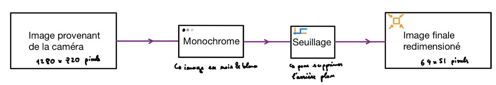
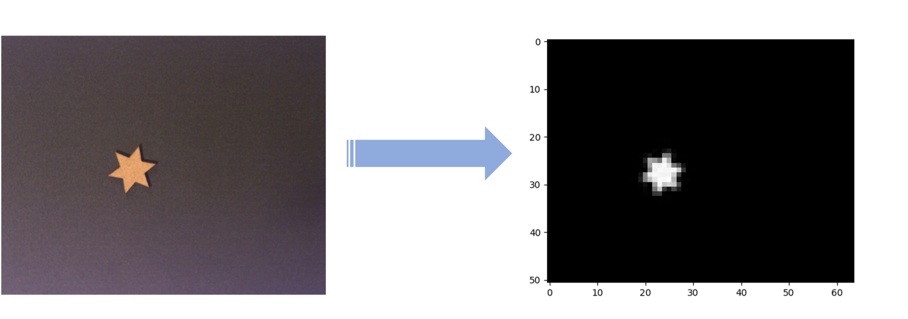

About the project#
Caution
This website is still a work in progress
Model design#
Let’s start with a small order of magnitude calculation: the neural network that is used here and whose operation will be detailed later, contains 256 neurons in its first layer, and each of these neurons is connected to each pixel of the input image. Thus since in this model the number of parameters to train per neuron is proportional to the number of input, for an image coming from the camera that is to say in high definition of 1280×720 pixels then the number of parameters to train for a network of 256 neurons is:
Another good order of magnitude as to the number of images to train the algorithm in our case, is to at least have the same order of magnitude of number of images as number of parameters. We thus quickly reach quantities that are practically impossible on our scale.
It is for this reason that we have chosen to pre-process the images by applying a certain number of operations to them in order to simplify the task for the neural network as much as possible. Indeed, if a human can clearly distinguish different shapes without verifying that a square contains 4 corners, a neural network must extract from an image the important characteristics (features) of the object of interest in order to to be able to distinguish it with precision.
Voici le schéma du traitement appliqué à une image provenant de la caméra :
{kind=link}
Finally the final image is therefore composed of 3264 pixels, is in shades of gray, and includes all its pixels of the background with a pixel value of 0 out of 255. The image can therefore be transformed into a numpy vector:
{kind=link}
Thus the number of parameters of the neural network is of the order of
In our case we will therefore use a database of 91,000 images.
It is clear that taking such a number of images can be relatively long, so we opted for an artificial generation of this database. To do this, we therefore use an image bank actually taken with the camera and then processed, here 10 real images per shape, i.e. 50 in total (square, circle, triangle, pentagon, star).
To create additional images for training the algorithm, each original image generates 1,750 new images. In order to generate these images, the original image performs a random angle rotation, then a random translation. The interest here is to make sure to generate other situations where the object is placed on the mat in a different way. Consequently for each form a .csv file will be created with the Panda library to store the 17500 associated images. The advantage is then to title (label) the images of each shape, but also to have fast python variables and suitable for handling large files so as not to use all the RAM memory of the computer. In addition, 3500 “empty” images (numpy arrays filled with 0) are added in order to also be able to recognize when no object is present in view of the camera. Subsequently, test databases of 500 images each will also be added to the algorithm training code. This test base avoids an overfitting situation.
Now begins the part concerning the artificial intelligence model, in this whole project the architecture of the MLP (Multi-Layer Perceptron) will be carried out using the scikit-learn library, and more precisely the MLPClassifier library. So here is a summary of how a multilayer neural network works:

- ::
Inputs:
Each perceptron receives a set of input values. Each input value is associated with a weight which represents the relative importance of this input compared to the output of the perceptron.
Weighted sum:
Perceptron n°i first performs a weighted sum of the input values by multiplying each input value by its corresponding weight, then adding the weighted products. This can be represented by the following formula: